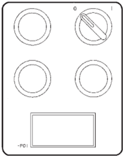

Procédure
de mise en service
presse Boy 25 et Boy 50 |
| N°
|
Opérations |
| 1
|
Mettre
en service la presse (TP mise en service de la presse).
|
| 2 |
Ouvrir
les énergies : eau, électricité (TP
mise en service de la presse).
|
| 3 |
Vérifier
le bon fonctionnement de la machine : arrêts
d’urgence,
des carters, des témoins lumineux (TP mise en service de la
presse). |
|
Faire
valider par le professeur. |
|
Régler
les paramètres de chauffage.
|
| 4 |
Sélectionner la page
températures zones de chauffage.
| Sélectionner
la page sur le volet rabattable et valider. |
|
| La page
températures zones de chauffage s’affiche. |
|
|
| 5
|
Sélectionner une zone
de saisie.
Utiliser les 4 flèches du volet rabattable, ↓ pour
descendre, ↑ pour monter, → pour aller à
droite, ← pour aller à gauche pour
sélectionner la zone de saisie.
Choisir la zone (cons °C, Buse) :
|
| 6 |
Rentrer les consignes.
| Entrer
la valeur 190 pour la zone buse. |
|
| Valider
la consigne avec la touche du clavier rabattable. |
|
| La
consigne est prise en compte. |
|
|
| 7 |
Rentrer les consignes.
Entrer la valeur 180° C pour la zone 4, 170° C pour la
zone 2, 160° C pour la zone 1.
Valider chaque consigne avec la touche du clavier rabattable.
Les consignes sont prises en compte.
|
|
Faire
valider par le professeur. |
|
Régler
les paramètres de chauffage en fonction des consignes du
tableau. |
| 8 |
Rentrer les consignes.
Rentrer les consignes du tableau des relevés en fonction de
la matière. |
|
Régler
les paramètres de plastification. |
| 9 |
Sélectionner la page
plastification.
| Sélectionner
la page sur le volet rabattable et valider. |
 |
| La page
plastification s’affiche. |
|
|
| 10 |
Rentrer les consignes.
Rentrer les consignes de fa fiche plastification. |
|
Régler
les paramètres injection phase de remplissage. |
| 11 |
Sélectionner la page
injection phase de remplissage.
| Sélectionner
la page sur le volet rabattable et valider. |
 |
La page plastification s’affiche. |
|
|
| 12 |
Rentrer les consignes.
Rentrer les consignes de fa fiche injection phase de remplissage. |
|
Régler
les paramètres injection phase de maintien. |
| 13 |
Sélectionner la page
injection phase de maintien.
| Sélectionner
la page sur le volet rabattable et valider. |
|
| La page
plastification s’affiche. |
|
|
| 14 |
Rentrer les consignes.
Rentrer les consignes de fa fiche injection phase de maintien. |
|
Faire
valider par le professeur. |
|
Mettre
les chauffes en route. |
| 15 |
 |
L’allumage
des chauffes s’effectue à l’aide du
commutateur (S80) à deux positions „Chauffage
ARRET“ (0) et „Chauffage
préparé“ (1) ainsi
qu’à l’aide du bouton-poussoir lumineux
(S80E) „Chauffage prêt“.
- Mettre le S80 à 1 ;
- appuyer sur le bouton poussoir S80E (bouton voyant allumé)
|
|
|
Faire
valider par le professeur. |
|
Préparation de la
matière. |
| 16 |
Attendre que les
chauffes soient à température.
Regarder la température réelle dans le fourreau
par rapport aux consignes que vous avez rentré.
Si l’écart entre la valeur réelle et la
consigne est trop importante, la presse indique une alarme (voyant
allumé). |
| 17 |
Préparer
un godet de matière et le verser dans le fourreau. |
|
Injection
(purge). |
| 18 |
Sur le
tableau, appuyer sur le bouton de rotation de la vis (touche
plastification à droite) jusqu’à
l’arrêt de la vis.
Vérifier que la led fin de dosage soit allumé.
|
| 19 |
Vérifier
que la led décompression soit allumé.
Si la décompression n’est pas faite, appuyer
décompression jusqu’au moment ou la led
s’allume.
|
| 20 |
Appuyer
et maintenir le bouton injection jusqu’à la fin de
la phase d’injection.
|
| 21 |
Ramasser
la purge. Attention aux EPI. |
| 22 |
Répéter
les opérations 18 à 21, 5 fois. |
|
Arrêt
de la machine et remettre le poste de travail en état |
| 23 |
Purger
la machine (étape 18 à 21) jusqu’au
moment ou la vis de plastification n’arrive plus à
doser. |
|
Faire
valider par le professeur. |
| 24 |
Eteindre
les chauffes.
- appuyer sur le bouton poussoir S80E
(bouton voyant éteint)
- Mettre
le S80 à 0 |
| 25 |
Arrêter
la machine (TP mise en service de la presse). |
| 26 |
Fermer
les énergies : eau, électricité (TP
mise en service de la
presse). |
| 27 |
Nettoyer
et remettre le poste de travail en état. |
|
Faire
valider par le professeur. |